GDAL installation
This workshop requires GDAL 3.13.0, released May 2026.
The suggested installation procedure is to use GDAL Conda builds. Conda is a system package management system that works on all major desktop operating system (Linux, Windows, MacOS X). It is mainly aimed at the Python ecosystem, but with a strong focus on tackling correctly the issue of software with native dependencies such as GDAL.
Linux
Conda installation
If you already have a Conda installation, skip that paragraph.
Download the Miniconda3 installer:
$ curl -O https://repo.anaconda.com/miniconda/Miniconda3-latest-Linux-x86_64.sh
Install it:
$ sh Miniconda3-latest-Linux-x86_64.sh
will output something like:
Welcome to Miniconda3 py313_26.1.1-1
In order to continue the installation process, please review the license
agreement.
Please, press ENTER to continue
Press Enter, then
>>>
MINICONDA END USER LICENSE AGREEMENT
Copyright Notice: Miniconda(R) (C) 2015, Anaconda, Inc.
All rights reserved. Miniconda(R) is licensed, not sold.
Redistribution and use in source and binary forms, with or without modification, are permitted provided that the following conditions are met:
1. Redistributions of source code must retain the above copyright notice, this list of conditions and the following disclaimer;
2. Redistributions in binary form must reproduce the above copyright notice, this list of conditions and the following disclaimer in the documentation and/or other materials provided w
ith the distribution;
3. The name Anaconda, Inc. or Miniconda(R) may not be used to endorse or promote products derived from this software without specific prior written permission from Anaconda, Inc.; and
4. Miniconda(R) may not be used to access or allow third parties to access Anaconda package repositories if such use would circumvent paid licensing requirements or is otherwise restri
cted by the Anaconda Terms of Service.
DISCLAIMER: THIS SOFTWARE IS PROVIDED BY ANACONDA "AS IS" AND ANY EXPRESS OR IMPLIED WARRANTIES, INCLUDING, BUT NOT LIMITED TO, THE IMPLIED WARRANTIES OF MERCHANTABILITY, FITNESS FOR A
PARTICULAR PURPOSE , AND NON-INFRINGEMENT ARE DISCLAIMED. IN NO EVENT SHALL ANACONDA BE LIABLE FOR ANY DIRECT, INDIRECT, INCIDENTAL, SPECIAL, EXEMPLARY, OR CONSEQUENTIAL DAMAGES (INCL
UDING, BUT NOT LIMITED TO, PROCUREMENT OF SUBSTITUTE GOODS OR SERVICES; LOSS OF USE, DATA, OR PROFITS; OR BUSINESS INTERRUPTION) HOWEVER CAUSED AND ON ANY THEORY OF LIABILITY, WHETHER
IN CONTRACT, STRICT LIABILITY, OR TORT (INCLUDING NEGLIGENCE OR OTHERWISE) ARISING IN ANY WAY OUT OF THE USE OF MINICONDA(R), EVEN IF ADVISED OF THE POSSIBILITY OF SUCH DAMAGE.
Do you accept the license terms? [yes|no]
>>>
Answer "yes", or otherwise find another way of installing GDAL :-)
Miniconda3 will now be installed into this location:
/home/{YOUR_USE_NAME_HERE}/miniconda3
- Press ENTER to confirm the location
- Press CTRL-C to abort the installation
- Or specify a different location below
[/home/{YOUR_USE_NAME_HERE}/miniconda3] >>>
Press ENTER to confirm.
PREFIX=/home/{YOUR_USE_NAME_HERE}/miniconda3
Unpacking bootstrapper...
Unpacking payload...
Installing base environment...
Downloading and Extracting Packages:
## Package Plan ##
environment location: /home/{YOUR_USE_NAME_HERE}/miniconda3
added / updated specs:
- pkgs/main/linux-64::_libgcc_mutex==0.1=main
[ ... snip ... ]
- pkgs/main/noarch::tzdata==2025c=he532380_0
The following NEW packages will be INSTALLED:
_libgcc_mutex pkgs/main/linux-64::_libgcc_mutex-0.1-main
[ ... snip ... ]
zstd pkgs/main/linux-64::zstd-1.5.7-h11fc155_0
Downloading and Extracting Packages:
Preparing transaction: done
Executing transaction: done
installation finished.
Do you wish to update your shell profile to automatically initialize conda?
This will activate conda on startup and change the command prompt when activated.
If you'd prefer that conda's base environment not be activated on startup,
run the following command when conda is activated:
conda config --set auto_activate_base false
Note: You can undo this later by running `conda init --reverse $SHELL`
Proceed with initialization? [yes|no]
[no] >>>
For simplicity, do type "yes" (so against the suggestion)
no change /home/{YOUR_USE_NAME_HERE}/miniconda3/condabin/conda
no change /home/{YOUR_USE_NAME_HERE}/miniconda3/bin/conda
no change /home/{YOUR_USE_NAME_HERE}/miniconda3/bin/conda-env
no change /home/{YOUR_USE_NAME_HERE}/miniconda3/bin/activate
no change /home/{YOUR_USE_NAME_HERE}/miniconda3/bin/deactivate
no change /home/{YOUR_USE_NAME_HERE}/miniconda3/etc/profile.d/conda.sh
no change /home/{YOUR_USE_NAME_HERE}/miniconda3/etc/fish/conf.d/conda.fish
no change /home/{YOUR_USE_NAME_HERE}/miniconda3/shell/condabin/Conda.psm1
no change /home/{YOUR_USE_NAME_HERE}/miniconda3/shell/condabin/conda-hook.ps1
no change /home/{YOUR_USE_NAME_HERE}/miniconda3/lib/python3.13/site-packages/xontrib/conda.xsh
no change /home/{YOUR_USE_NAME_HERE}/miniconda3/etc/profile.d/conda.csh
modified /home/{YOUR_USE_NAME_HERE}/.bashrc
==> For changes to take effect, close and re-open your current shell. <==
Thank you for installing Miniconda3!
As suggested, start a new terminal or source the updated ~/.bahsrc.
GDAL installation in a dedicated conda environment
First, we will create a Conda "environment" for the purpose of this workshop, and will call it "gdal". A Conda environment is a kind of workspace where you can install a set of packages that will not interfer with the ones of other environments. We use the "conda-forge" channel to get up-to-date official releases from the conda community.
$ conda create --name gdal -c conda-forge
Retrieving notices: done
Channels:
- conda-forge
Platform: linux-64
Collecting package metadata (repodata.json): done
Solving environment: done
==> WARNING: A newer version of conda exists. <==
current version: 25.7.0
latest version: 26.3.2
Please update conda by running
$ conda update -n base -c conda-forge conda
## Package Plan ##
environment location: /home/{YOUR_USE_NAME_HERE}/miniconda3/envs/gdal
Proceed ([y]/n)? y
Answer "y" and validate.
Downloading and Extracting Packages:
Preparing transaction: done
Verifying transaction: done
Executing transaction: done
#
# To activate this environment, use
#
# $ conda activate gdal
#
# To deactivate an active environment, use
#
# $ conda deactivate
$ conda activate gdal
As suggested, you need to activate the newly created environment with:
$ conda activate gdal
When an environment is activated, new lines in the shell are prefixed with "(name_of_environment)".
Let's update the base Conda environment to save a later warning:
$ conda update -n base -c conda-forge conda
Channels:
- conda-forge
Platform: linux-64
Collecting package metadata (repodata.json): done
Solving environment: done
==> WARNING: A newer version of conda exists. <==
current version: 25.7.0
latest version: 26.3.2
Please update conda by running
$ conda update -n base -c conda-forge conda
## Package Plan ##
environment location: /home/{YOUR_USE_NAME_HERE}/miniconda3
added / updated specs:
- conda
The following packages will be UPDATED:
ca-certificates 2026.2.25-hbd8a1cb_0 --> 2026.4.22-hbd8a1cb_0
openssl 3.6.1-h35e630c_1 --> 3.6.2-h35e630c_0
Proceed ([y]/n)? y
Answer "y" and validate.
Downloading and Extracting Packages:
Preparing transaction: done
Verifying transaction: done
Executing transaction: done
Now, we can finally install GDAL !
(gdal) $ conda install gdal
Channels:
- conda-forge
Platform: linux-64
Collecting package metadata (repodata.json): done
Solving environment: done
## Package Plan ##
environment location: /home/{YOUR_USE_NAME_HERE}/miniconda3/envs/gdal
added / updated specs:
- gdal
The following packages will be downloaded:
package | build
---------------------------|-----------------
ca-certificates-2026.4.22 | hbd8a1cb_0 128 KB conda-forge
gdal-3.13.0 | py314hd76b233_4 1.8 MB conda-forge
[ ... snip ...]
zlib-1.3.2 | h25fd6f3_2 94 KB conda-forge
------------------------------------------------------------
Total: 77.5 MB
The following NEW packages will be INSTALLED:
_openmp_mutex conda-forge/linux-64::_openmp_mutex-4.5-20_gnu
[ ... snip ...]
zstd conda-forge/linux-64::zstd-1.5.7-hb78ec9c_6
Proceed ([y]/n)? y
Answer "y" and validate.
Downloading and Extracting Packages:
Preparing transaction: done
Verifying transaction: done
Executing transaction: done
Now let's check we got the GDAL we expected:
$ gdal --version
GDAL 3.13.0 "Iowa City", released 2026/05/04
MacOS X
Note
Those instructions could not be verified due to lack of access to that platform.
Conda installation
If you already have a Conda installation, skip that paragraph. Otherwise follow the instructions at https://www.anaconda.com/docs/getting-started/miniconda/install/mac-gui-install
GDAL installation in a dedicated conda environment
Please follow related Linux instructions.
Windows
(tested on Windows 10, hopefully valid for Windows 11)
Conda installation
If you already have a Conda installation, skip that paragraph.
Download the Miniconda3 installer at https://repo.anaconda.com/miniconda/Miniconda3-latest-Windows-x86_64.exe
And execute it as an administrator, typically by right-clicking on the executable file and select "Run as administrator".
Running as administrator is to make sure that you have permissions to install into c:\gdal so that later instructions can be applied without modification.
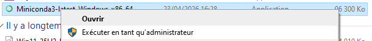
Validate the Welcome dialog:
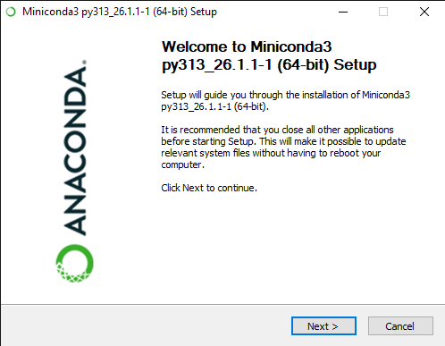
Accept the license agreement:
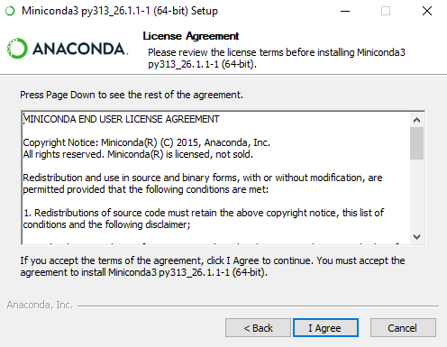
Select "Just Me" and validate:
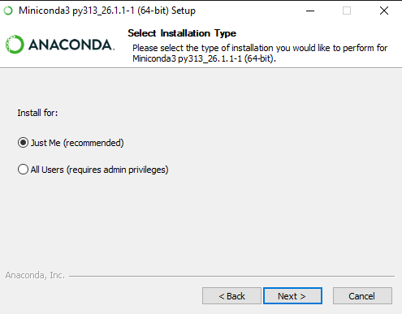
Modify the install path to c:\gdal\miniconda3 and validate:
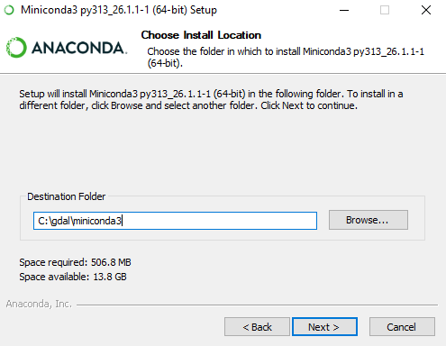
Only select "Create shortcuts" and click Install:
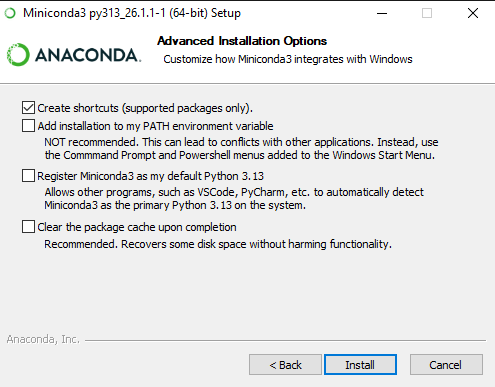
Once installation has completed, click Next:
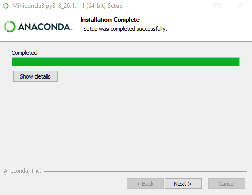
And finally click Finish:
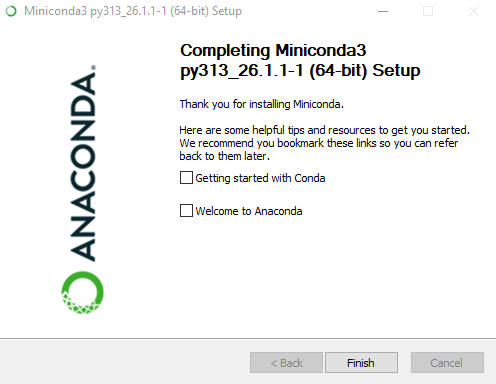
GDAL installation in a dedicated conda environment
First, let's start a Conda enabled command line.
From the Start Menu, select "Anaconda Prompt"
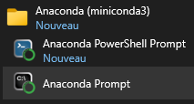
which will open a cmd console with Conda executables available in the PATH.
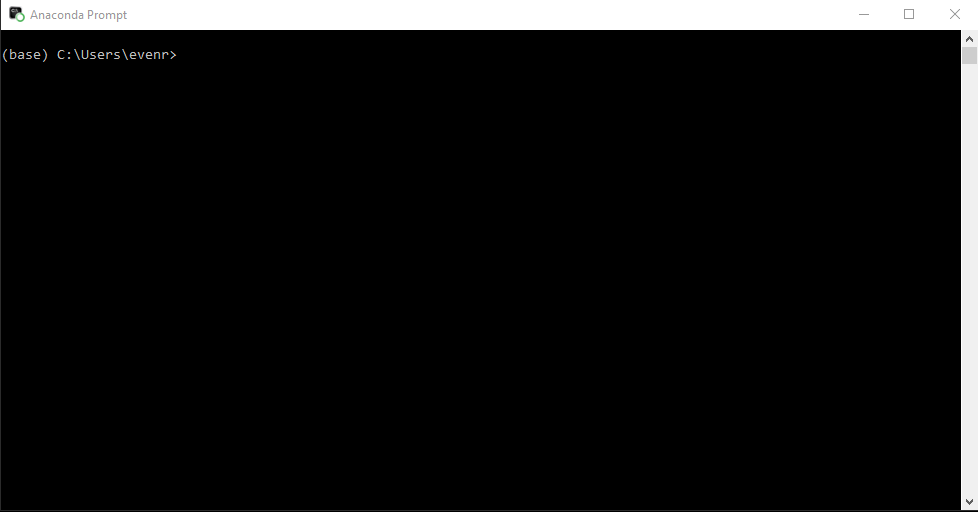
Then we will create a Conda "environment" for the purpose of this workshop,
and will call it "gdal", an install it into c:\gdal\condaenv`gdal.
A Conda environment is a kind of workspace where you
can install a set of packages that will not interfer with the ones of other
environments. We use the "conda-forge" channel to get up-to-date official releases
from the conda community.
- ::
(base) C:Usersmy_user_name>conda create --prefix c:/gdal/condaenv/gdal -c conda-forge
Do you accept the Terms of Service (ToS) for https://repo.anaconda.com/pkgs/main? [(a)ccept/(r)eject/(v)iew]: a
Do you accept the Terms of Service (ToS) for https://repo.anaconda.com/pkgs/r? [(a)ccept/(r)eject/(v)iew]: a
Do you accept the Terms of Service (ToS) for https://repo.anaconda.com/pkgs/msys2? [(a)ccept/(r)eject/(v)iew]: a
3 channel Terms of Service accepted
Channels:
- conda-forge
- defaults
Platform: win-64
Collecting package metadata (repodata.json): done
Solving environment: done
==> WARNING: A newer version of conda exists. <==
current version: 26.1.1
latest version: 26.3.2
Please update conda by running
$ conda update -n base -c defaults conda
## Package Plan ##
environment location: c:\gdal\condaenv\gdal
Proceed ([y]/n)?y
Answer "y" and validate.
Downloading and Extracting Packages:
Preparing transaction: done
Verifying transaction: done
Executing transaction: done
#
# To activate this environment, use
#
# $ conda activate c:\gdal\condaenv\gdal
#
# To deactivate an active environment, use
#
# $ conda deactivate
As suggested, you need to activate the newly created environment with:
(base) C:\Users\my_user_name>conda activate c:\gdal\condaenv\gdal
When an environment is activated, new lines in the shell are prefixed with "(name_of_environment)".
(c:\gdal\condaenv\gdal) C:\Users\my_user_name>conda install gdal
3 channel Terms of Service accepted
Channels:
- conda-forge
- defaults
Platform: win-64
Collecting package metadata (repodata.json): \
3 channel Terms of Service accepted
Channels:
- conda-forge
- defaults
Platform: win-64
Collecting package metadata (repodata.json): done
Solving environment: done
==> WARNING: A newer version of conda exists. <==
current version: 26.1.1
latest version: 26.3.2
Please update conda by running
$ conda update -n base -c defaults conda
## Package Plan ##
environment location: c:\gdal\condaenv\gdal
added / updated specs:
- gdal
The following packages will be downloaded:
package | build
---------------------------|-----------------
blosc-1.21.6 | hfd34d9b_1 49 KB conda-forge
[ ... snip ... ]
zstd-1.5.7 | h534d264_6 379 KB conda-forge
------------------------------------------------------------
Total: 180.9 MB
The following NEW packages will be INSTALLED:
blosc conda-forge/win-64::blosc-1.21.6-hfd34d9b_1
[ ... snip ... ]
zstd conda-forge/win-64::zstd-1.5.7-h534d264_6
Proceed ([y]/n)?y
Answer "y" and validate.
[ ... displaying packages in download ... ]
Downloading and Extracting Packages:
Preparing transaction: done
Verifying transaction: done
Executing transaction: done
Now let's check we got the GDAL we expected:
(c:\gdal\condaenv\gdal) C:\Users\my_user_name>gdal --version
GDAL 3.13.0 "Iowa City", released 2026/05/04
Install a Bash shell
The GDAL CLI comes with a powerfull auto-completion mechanism, but this requires it to be used from a Bash-compatible shell. In this paragraph, we will proceed to installing such shell.
Download the MSYS2 installer at https://github.com/msys2/msys2-installer/releases/download/2026-03-22/msys2-x86_64-20260322.exe
And execute it as an administrator, typically by right-clicking on the executable file and select "Run as administrator".
Running as administrator is to make sure that you have permissions to install into c:\gdal so that later instructions can be applied without modification.
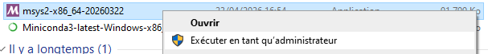
Click on Next:
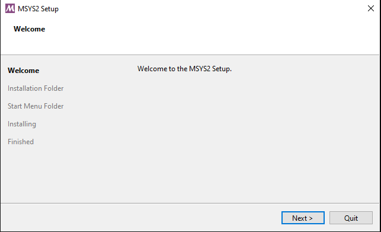
Specify c:\gdal\msys64` as the installation folder and click on Next:
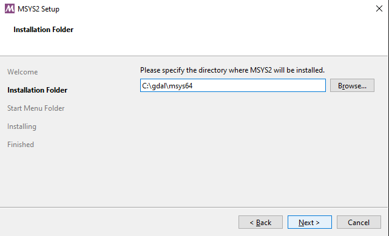
Specify "msys2_gdal" as the Start Menu folder and click on Next:
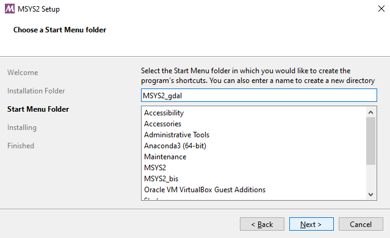
Click on Finish:
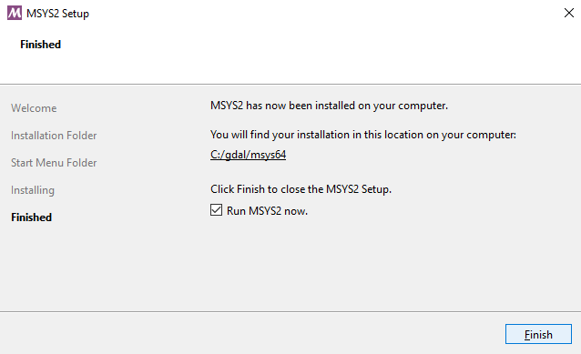
Create a launcher script
Download the script at https://github.com/rouault/gdal_cli_workshop/blob/master/gdal.bat
and place it in c:\gdal\gdal.bat`. This script will launch a Bash shell
with all the necessary environment to run GDAL, include the command line completion.